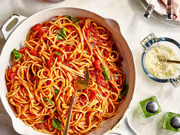

One-Pot Pasta with Tomatoes

Interested in adding another quick meal recipe to your collection, sit tight
Pasta is one popular dish all over the world, it is liked for its simplicity and ease of preparation. It is a snack that will come in handy when an unbrupt guest comes through
Ingredients
- 1 pound pasta
- 1 can (14 oz) diced tomatoes
- 1 tablespoon olive oil
- Salt and pepper to taste
Steps
- Heat oil in a large pot over medium-high heat.
- Add pasta and cook for 2-3 minutes.
- Pour in water and bring to a boil.
- Reduce heat, cover, and simmer for 10-12 minutes until pasta is al dente.
- Stir in cherry tomatoes and diced tomatoes.
- Season with salt and pepper to taste.